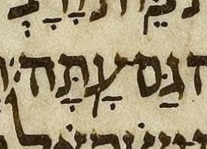
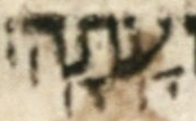

Alternatively, you can click on an individual Hebrew word to toggle only that word's spacing.
← Back to Meteg after the stress.
A verse-final word may have more than one metsil, the neutral term used here for a mark that may be meteg or silluq. The metsil on the stressed syllable is silluq; a later metsil is meteg only when the stress has been established on an earlier syllable.
In this investigation, the printed tradition helps clarify marks in the manuscript tradition. Although printed editions generally have an excess of meteg marks, the printed editions considered here sometimes have the silluq alone where a manuscript has a later metsil. The printed editions' lack of the later mark helps identify the corresponding manuscript mark as meteg rather than silluq.
Each classified case below has at least one source—a manuscript or printed edition—whose last metsil is later than the last metsil in at least one other source.
In each monospace cell, the first line marks sources that have the later metsil and the second line marks sources that do not. The four positions are A = Aleppo Codex, L = Leningrad Codex, K = Koren, and S = the Simanim Tanakh. In either line, a dash means that the source is not assigned to that line; only dashes in both lines at the same position mean that no classification is recorded for that source.
For example, at
1 Sam. 17:5,
-L-- on the first line means that the Leningrad Codex has the later
metsil, while A-KS on the second line means that the
Aleppo Codex, Koren, and the Simanim Tanakh do not. In other words, Aleppo, Koren and Simanim each
have only one metsil and therefore it must be a
silluq. That metsil is on ח, i.e. they
have נְחֹֽשֶׁת׃.
Rows labeled candidate record a later metsil in the named transcriptions, not in the Leningrad Codex manuscript itself. No Leningrad Codex classification is recorded until the manuscript is read.
| Form | Reference | Sources |
|---|---|---|
| נְחֹֽשֶֽׁת׃ | 1 Sam. 17:5 | -L-- |
| לְכֻלָּֽהְנָֽה׃ | 1 Kgs. 7:37 | A--- |
| גַּם־עָֽתָּֽה׃ | 1 Kgs. 14:14 | -L-- |
| הִתְרֹעָֽעִֽי׃ | Ps. 60:10 | -L-- |
| חֽוּשָֽׁה׃ | Ps. 70:2 | -L-- |
| יְבָרֲכֶֽנְהֽוּ׃ | Ps. 72:15 | -L-- |
| מֶֽנְהֽוּ׃ | Job 4:12 | AL-S |
We became aware of 1 Sam. 17:5 from Jacobson, CHB, p. 31, and of 1 Kgs. 7:37 from Breuer, CoS, ch. 8 §47, footnote 54 (p. 355 in the Wengrov English translation). The remaining entries came from systematic candidate searches.
MAM's note at 1 Kgs. 7:37 reports both manuscript readings: the Aleppo Codex has the later meteg, while the Leningrad Codex has the silluq alone. MAM's body text has לְכֻלָּֽהְנָֽה׃, following the Aleppo Codex. This choice retains MAM's general policy of following the Aleppo Codex. MAM diverges from Aleppo when a specific editorial policy requires a different form or, in a rare case, when the Aleppo Codex is fairly clearly erroneous or fairly clearly outside the manuscript tradition of which the Aleppo Codex is generally the greatest example. Because meteg after silluq is so rare, such a judgment is difficult here, so MAM follows the Aleppo Codex.
At 1 Kgs. 14:14, UXLC acquired a second metsil through Daniel Holman's change proposal 2022.08.31-17; Breuer also notes the second metsil in Da'at Miqra.
The Aleppo Codex lacks the later meteg at 1 Sam. 17:5.
The Leningrad Codex has a meteg after its silluq at 1 Sam. 17:5.

The Aleppo Codex lacks the later meteg at Ps. 72:15.

The Leningrad Codex has a later meteg at Ps. 72:15.

The Aleppo Codex has a later meteg at 1 Kgs. 7:37.

The Leningrad Codex lacks the later meteg at 1 Kgs. 7:37.

The Aleppo Codex has both strokes at Job 4:12.

The Leningrad Codex has both strokes at Job 4:12.

At 1 Kgs. 14:14, the Aleppo Codex lacks the second metsil that the Leningrad Codex has. The Leningrad Codex's second metsil is the likely meteg after the silluq.


At Ps. 60:10, the Aleppo Codex has the silluq alone, while the Leningrad Codex has the silluq and a second metsil. The second Leningrad metsil is the likely meteg after the silluq.


At Ps. 70:2, the Aleppo Codex and Cambridge Add. 1753 have the silluq alone, while the Leningrad Codex has the silluq and a second metsil. The second Leningrad metsil is the likely meteg after the silluq.